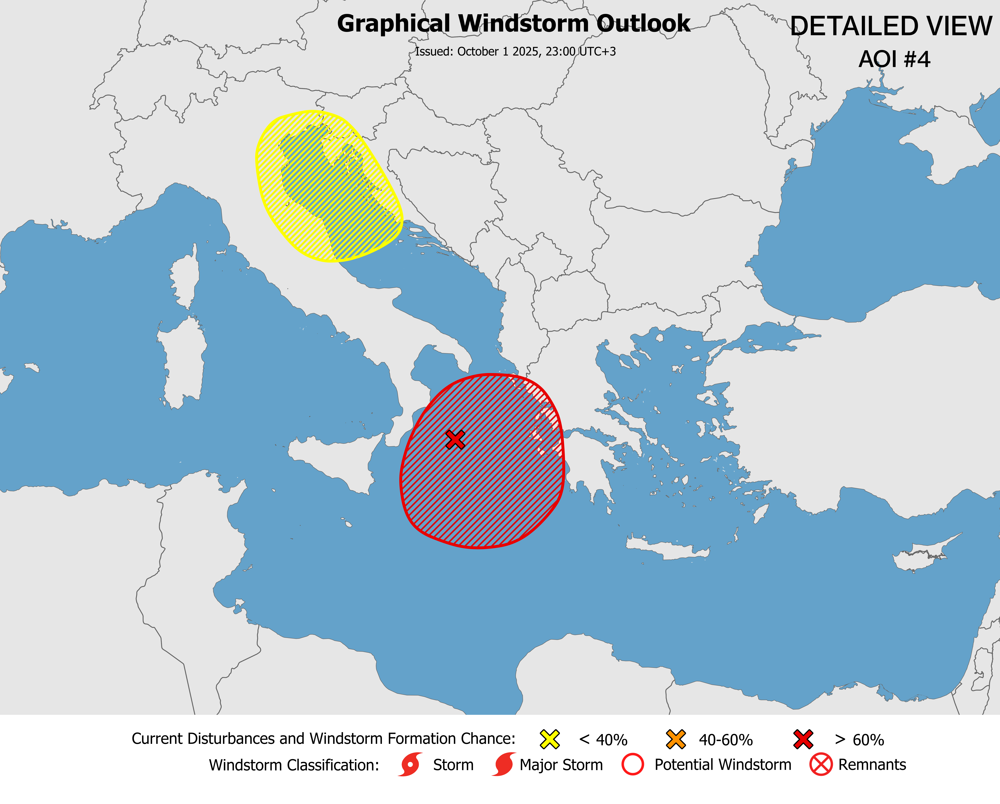

Outlooks

⚠️ These outlooks are not official.
Issued: [September 1 2025, 02:55 UTC+3]
Current conditions: [Disorganized showers and thunderstorms 125 km south of Trepassey. The system will organize soon.]
Expected winds: [No data]
Next update: [Not provided]
Discussion
[Couldn't find it lmao]
Detailed / Regional View
⚠️ These outlooks are not official.
Issued: [October 1 2025, 23:00 UTC+3]
Current conditions: [The system is currently organizing, and could develop into a Potential Windstorm tomorrow.]
Expected winds: [60 km/h sustained]
Next update: [Not provided]
Discussion
[AOI #4 * Formation chance through 48 hours...high...100 percent * Formation chance through 7 days...high...100 percent /// Thunderstorms and showers in the Ionian Sea are expected to strengthen and could develop into a potential windstorm tomorrow. Red weather warnings are currently in effect in Serbia, Kosovo, and parts of Greece. AOI #5 * Formation chance through 48 hours...none...0 percent * Formation chance through 7 days...low...30 percent /// A low pressure area may form in the Gulf of Venice, potentially bringing heavy rainfall and thunderstorms. Although recent model runs have not consistently shown this system, some still indicate its possibility; therefore, an AOI has been designated. If the system does develop, it could lead to sustained windstorm conditions.]